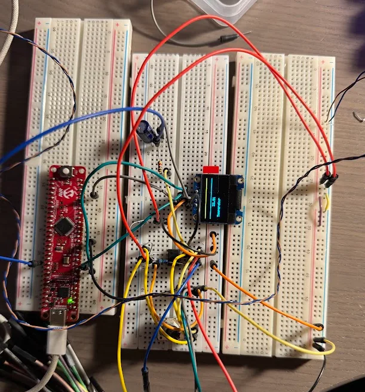
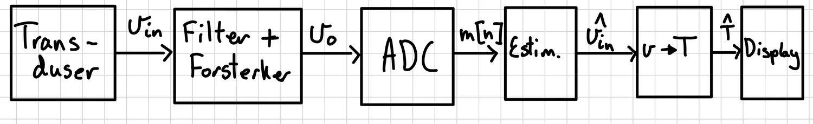
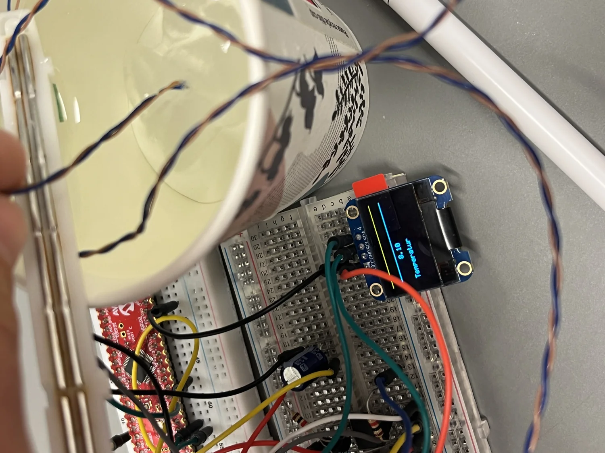

DP5 Digital thermometer
Thermometer with a K-type thermocouple, analog amplifier, 10-bit ADC on the AVR128DB48 and an OLED display.
Result
- Gain of about 1027, an RC low-pass filter at 1.61 Hz and averaging over 100 samples.
- Deviation from the expected temperature of 0.10, 0.61 and 0.09 °C at three test points, so under 1 °C in the range 0 to 40 °C.
- Limitation: the ADC is used single-ended, so the system cannot measure below the reference temperature.
Figures





